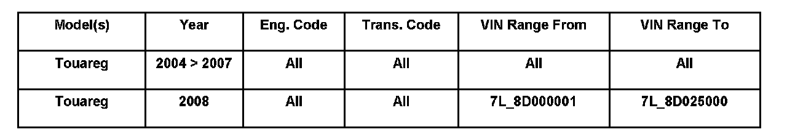
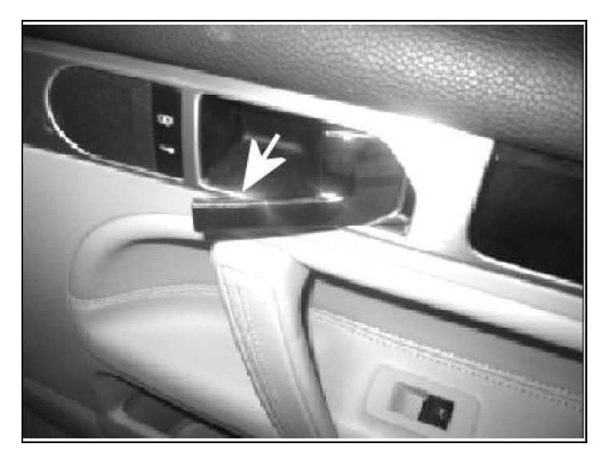
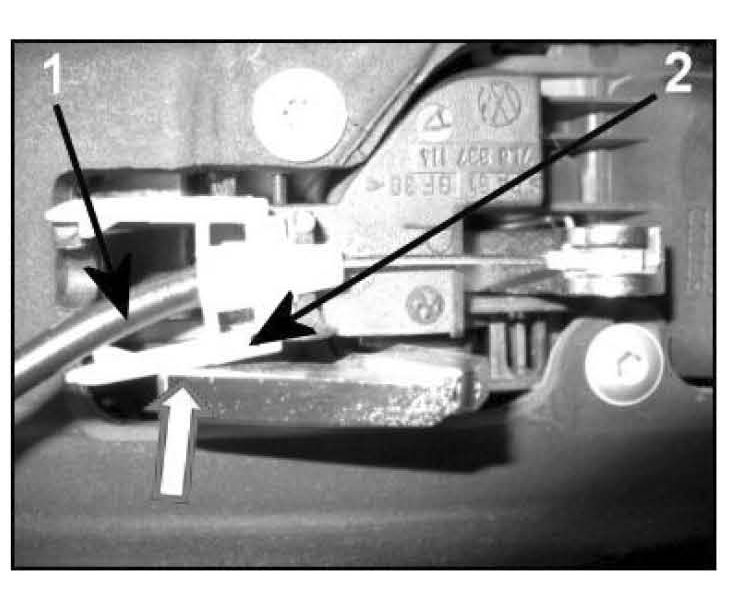
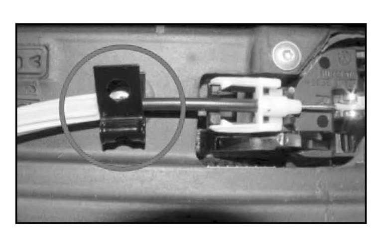
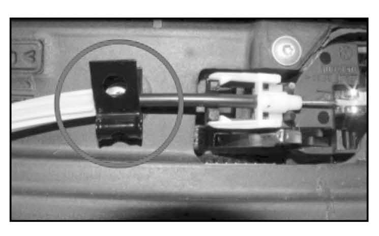
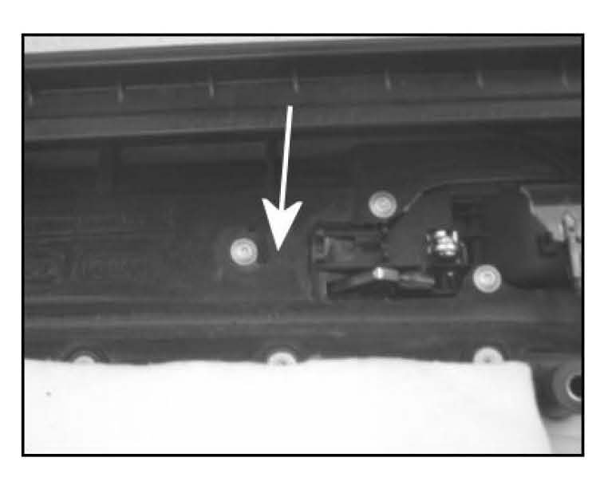
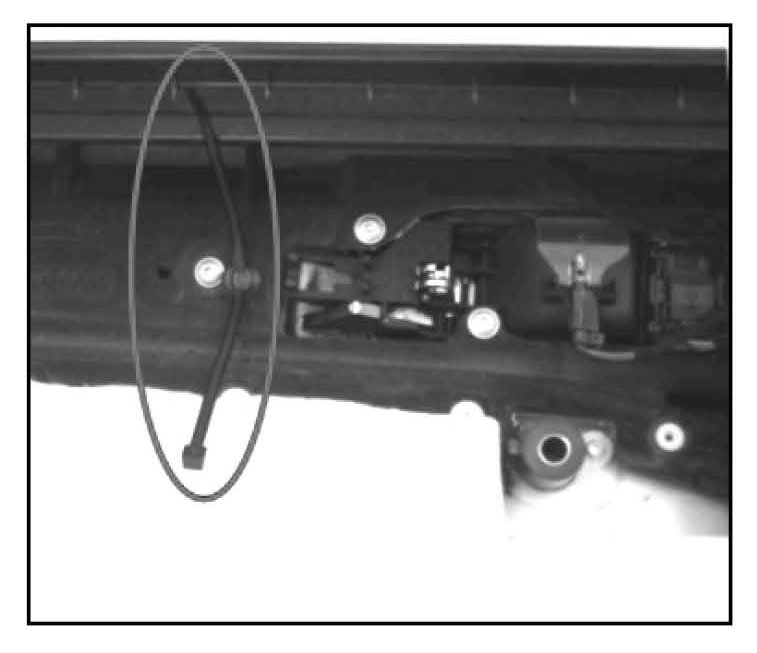
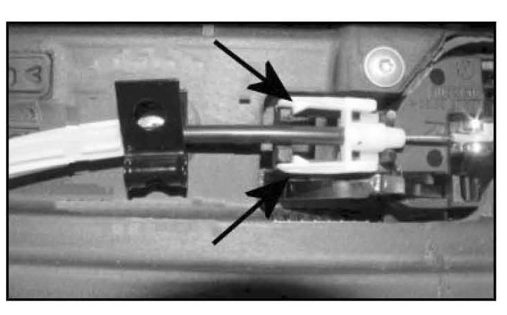
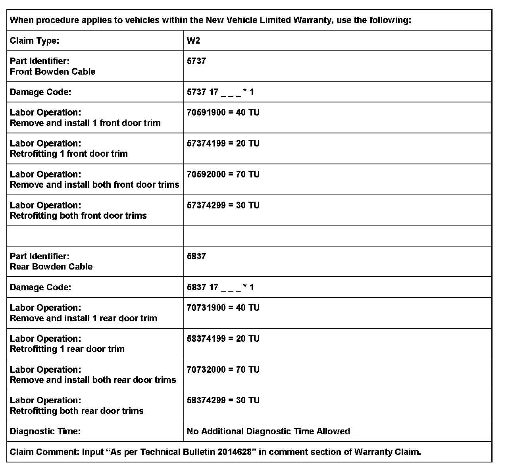
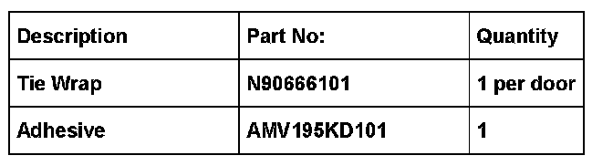

Interior - Door Handles Stay in OPEN Position
57 07 06May 3, 2007
2014628

Affected Vehicles
Condition
Door, Front or Rear Inner Release Handle Remains in Open Position When Exiting the Vehicle

After opening the door and exiting the vehicle, the inner door release handle -arrow- does not return to its closed position.
Tip:
Door latching function IS NOT affected if inner Release Handle remains in open position.
Technical Background

Bowden Cable -1- sags and forces retaining clip -2- apart. Retaining clip -2- rests on balance weight -arrow- of the Inner Door Release Handle and causes it to remain in the open position.
Production Solution

Addition of metal retaining clip on inside door trim -circle- from VIN: 7L_8D025000.
Service
Verification
^ Verify all Inner Door Release Handles for correct return operation.
Tip:
Inner Door Release Handle must fully return to the closed position when exiting the vehicle.
Procedure
If Inner Door Release Handle remains in open position:
^ Remove affected door trim. See ElsaWeb, Repair Manual, Body Interior, 70 - Trim, Noise Insulation.
The Bowden Cable must be secured to inner door trim.

Verify the affected door trim has a metal retaining clip -circle-.
If there is no metal retaining clip:

^ Drill a 5 mm diameter, 10 mm deep hole in door trim at -arrow- while using a drill stop.
NOTE:
Damage will occur if drilled deeper then 10 mm.
^ Place 1-2 drops of adhesive on tie wrap retainer and insert it into hole, see Required Parts and Tools.

^ Secure Bowden Cable to tie wrap -ellipse-.

Tip:
Ensure the retaining clip is reattached correctly -arrows- when Bowden Cable is secured using the metal retaining clip or tie wrap.
^ Install door trim. See ElsaWeb, Repair Manual, Body Interior, 70 - Trim, Noise Insulation.
Warranty

*Code per warranty vender code policy.

Required Parts and Tools
Tip:
Part number(s) are for reference only. Always see Parts Dept. for the latest part(s) information.
Additional Information
All part and service references provided in this Technical Bulletin are subject to change and/or removal. Always check with your Parts Dept. and Repair Manuals for the latest information.